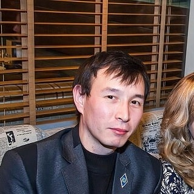

|  |
г.Алматы Кульджинский тр-к, д16/11, кв.33 сот.тел.:+77017899413 |
Дата рождения: 13 января 1983г.
Семейное положение: холост
Национальность: казах
Гражданство: Республика Казахстан
2010 - 2014 Каспийский Общественный Университет
Факультет: финансы и учет
Специальность: финансист
Казахский - хорошо
Русский - отлично
Английский - начальный
Microsoft Office:
Word,Excel,CorelDraw,Photoshop,HTML,CSS,JavaScript,TypeScript,React,NodeJS.
2014 - по настоящее время, старший охранник ТОО ОА "Титан"
2013 - 2014 оператор-копирайтер ТОО "Копицентр"
2013 - 2013 помощник бухгалтера ТОО "Bona Group"
2012 - 2013 менеджер по продажам ТОО "Sky Stone"
2006 - 2012 ресепшн ТОО Hotel "Tien-Shan"
2003 - 2006 администратор пиццерии "Venezia-2"
Трудолюбивый,пунктуальный,ответственный,внимательный,наблюдательный,интересуюсь новым опытом,способность быстро обучатся и знать на практике,отношусь к работе серьезно,прилежный и честный"
Читать книги,слушать рок-музыку,заниматься воркаутом,общаться с людьми,путешествовать.
Получить долгосрочную работу и повысить квалификацию.